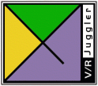

Summary
The VR Juggler project was started in 1997 by Dr. Carolina Cruz-Neira and a team of students at Iowa State University's Virtual Reality Applications Center. This ongoing work has produced a freely available open source, community-oriented virtual reality application development framework. VR Juggler is released under the GNU LGPL and will always be available for anyone and everyone to use free of charge.
See more on the VR Juggler Project Page